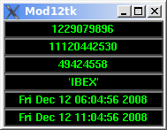

Recently, I gave a talk for the local PerlMongers on "A Magic Number Mystery Tour of Use.perl.org journals with pack and unpack" (pdf). In summary, time() and time_t take all longint values, so some time is 011111111111 or 1234567890 or Bill o'clock. Earlier on Thursday was (net byte order) IAGO o'clock.
During Santa's flight, there are several interesting times:
$ perl time_t2A.pl --sort | grep -E 'Dec 2[456]'
…
IRON Wed Dec 24 15:03:42 2008 GMT . Wed Dec 24 10:03:42 2008 ET
ISIS Thu Dec 25 08:50:27 2008 GMT . Thu Dec 25 03:50:27 2008 ET
ISLE Thu Dec 25 09:03:01 2008 GMT . Thu Dec 25 04:03:01 2008 ET
ISMS Thu Dec 25 09:07:31 2008 GMT . Thu Dec 25 04:07:31 2008 ET
ITCH Fri Dec 26 02:36:56 2008 GMT . Thu Dec 25 21:36:56 2008 ET
ITEM Fri Dec 26 02:45:33 2008 GMT . Thu Dec 25 21:45:33 2008 ET
…
While I could use The ThinkGeek Epoch Clock to track this, it won't arrive by 6am today… And while it supports Roman numerals1, which I don't need, it cannot display the time_t in the octal, hex, or ascii that I want; only hh:mm:ss is convertible.
We can churn out a quick prototype with a couple of CORE features: un-pack, Term::Cap, and Time::HiRes.
0. 1229079896
1. 11120442530
2. 49424558
3. 'IBEX'
4. Fri Dec 12 06:04:56 2008
5. Fri Dec 12 11:04:56 2008
But that's pretty dull in comparison to ThinkGeeks' lovely black monolith.
Tk to the rescue! Or not. I would like to try a Tk gui on Perl, but playing with Perl and PerlAdvent on my laptop has been a challenge this week, since a kernel security patch disconfigured my wifi, so I was not optimistic. I eventually bit the bullet and upgraded to Ubuntu Intrepid Ibex, forgetting that this would break my PerlAdvent tools and Ack, since they were built against /bin/perl (5.8.x). Ubuntu Intrepid Ibex sensibly moved up to the year old Perl 5.10, and now nothing works except core modules.
Eventually, a quick cpan Tk lets me load this portable GUI library, and its tests begin popping-up a plethora of windows, a pleasant sign my luck is changing. Even better, the module comes with a timer demo, which I was able to quickly wed to the CLI clock script…

Not too bad!
Did you notice what time it is today? Coincidence? Or is it…
Tk eye candy version:
1 #!/usr/local/bin/perl -w 2 # based on Tk/demos/timer 3 4 use Tk; 5 sub tick; 6 7 my $MW = MainWindow->new; 8 $MW->bind( '<Control-c>' => \&exit ); 9 $MW->bind( '<Control-q>' => \&exit ); 10 11 # %tinfo: the Timer Information hash. 12 # Key Contents 13 # w Reference to MainWindow. 14 # p 1 IIF paused. 15 # t0..t9 Value of -textvariables 16 my (%tinfo) = ( 'w' => $MW, 'p' => 0, ); 17 18 my $lines = scalar @{ [ it( time() ) ] }; 19 my @lines = map { 20 $MW->Label( 21 -relief => 'raised', 22 -width => 25, 23 -textvariable => \$tinfo{ 't' . $_ }, 24 -foreground => 'green', 25 -background => 'black', 26 ); 27 } 0 .. ( $lines - 1 ); 28 $_->pack() for @lines; 29 30 $tinfo{'w'}->after( 100, \&tick ); 31 MainLoop; 32 33 exit; 34 35 sub tick { 36 37 # Update the counter every 50 milliseconds, or 5 hundredths of a second. 38 39 return if $tinfo{'p'}; 40 my @ry = scalar(@ARGV) ? bytes_to_nums($ARGV[0]) : time; 41 @tinfo{ 't0' .. "t$lines" } = it( @ry ); 42 $tinfo{'w'}->after( 50, \&tick ); 43 } # end tick 44 45 #Reused code 46 ################################# 47 sub bytes_to_nums { 48 my $string = shift; 49 ## Probably has problems if given more than 4 chars? 50 my $long = unpack( "N*", pack( "a*", $string ) ); 51 return $long; 52 } 53 54 sub nums_to_bytes { 55 my $long = shift; 56 ## Probably has problems if given more than 4 chars? 57 my $string = unpack( "a*", pack( "N*", $long ) ); 58 return $string; 59 } 60 61 sub it { 62 my @Bufs; 63 my $i = 0; 65 my $t = shift; 65 66 push @Bufs, scalar($t); 67 push @Bufs, scalar( sprintf "%o", $t ); 68 push @Bufs, scalar( sprintf "%X", $t ); # require 5.010; my $_ = 69 push @Bufs, 70 scalar 71 do { local $_ = nums_to_bytes($t); s/[^[:print:]]/chr 0x3F/ge; "'$_'"; }; 72 push @Bufs, scalar localtime($t); 73 push @Bufs, scalar gmtime($t); 74 75 return wantarray ? @Bufs : \@Bufs; 76 }
The CLI prototype:
1 #! perl -l 2 ### Purpose - Find Words that are time_t's or vice versa 3 use Time::HiRes qw{usleep}; 4 5 # from FAQ http://perldoc.perl.org/perlfaq8.html#How-do-I-clear-the-screen%3F 6 our $cls; 7 if ( $^O =~ /MSWin/ ) { 8 $cls = ""; 9 } 10 else { 11 use Term::Cap; 12 my $terminal = Term::Cap->Tgetent( { OSPEED => 9600 } ); 13 my $clear_string = $terminal->Tputs('cl'); 14 $cls = $clear_string; 15 } 16 17 ## simulate 18 if (@ARGV) { 19 it( bytes_to_nums(shift) ) while @ARGV; 20 exit 1; 21 } 22 23 sub bytes_to_nums { 24 my $string = shift; 25 ## Probably has problems if given more than 4 chars? 26 my $long = unpack( "N*", pack( "a*", $string ) ); 27 return $long; 28 } 29 30 ## run 31 sub nums_to_bytes { 32 my $long = shift; 33 ## Probably has problems if given more than 4 chars? 34 my $string = unpack( "a*", pack( "N*", $long ) ); 35 return $string; 36 } 37 38 sub it { 39 my @Bufs; 40 my $i = 0; 41 my $t = shift; 42 43 push @Bufs, scalar($t); 44 push @Bufs, scalar( sprintf "%o", $t ); 45 push @Bufs, scalar( sprintf "%X", $t ); # require 5.010; my $_ = 46 push @Bufs, 47 scalar 48 do { local $_ = nums_to_bytes($t); s/[^[:print:]]/chr 0x3F/ge; "'$_'"; }; 49 push @Bufs, scalar localtime($t); 50 push @Bufs, scalar gmtime($t); 51 52 printf "%2d. %14s\n", $i++, $_ for @Bufs; 53 } 54 55 while (1) { print $cls; it( time() ); usleep(5e5); }
1. Perl can do Roman Numerals too.